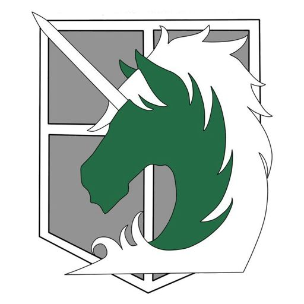

ИсторияТоп самых популярных персонажейИстория создания образа титановМангаПервый титанВооружённый силыРост титанов |
Военная полицияВоенная Полиция (憲兵団 Kenpeidan?) – наиболее престижный род войск. Это связано с тем, что их работа позволяет им жить во внутренних стенах, в безопасности. У военной полиции очень много ресурсов, а её власть больше чем у Гарнизона и Разведкорпуса. На самом же деле в военной полиции полное отсутствие надзора и дисциплины, кругом можно увидеть злоупотребление властью, у них плохие отношения с Гарнизоном и практически ненавистные с Разведкорпусом. Только десять лучших курсантов могут попасть в данный род войск, но судя по разговору Бориса и Хитч, есть и другие, нелегальные способы попасть в полицию.  Военная Полиция, являясь официальным представителем закона внутри Стен, поддерживает порядок, охраняет власть короля, отвечает за сбор налогов, распределение земли. Полицейские расследуют убийства и преступления не только на поверхности, но и в Подземном Городе. Сотрудники этой структуры обычно не сражаются с титанами, но иногда, для выполнения задания, им дают в пользование УПМ, либо ПУПМ, если с делом работает Центральный Отдел. Когда в дело вовлечена королевская семья, или стоит угроза заговора, Военная Полиция наделяется особыми полномочиями. <на главную |